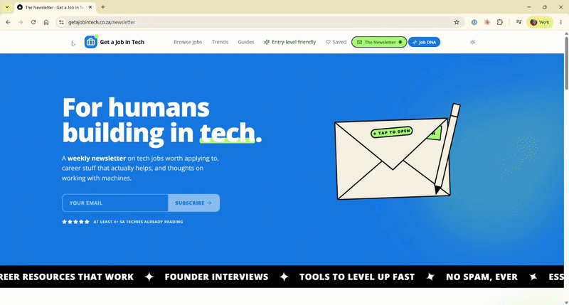
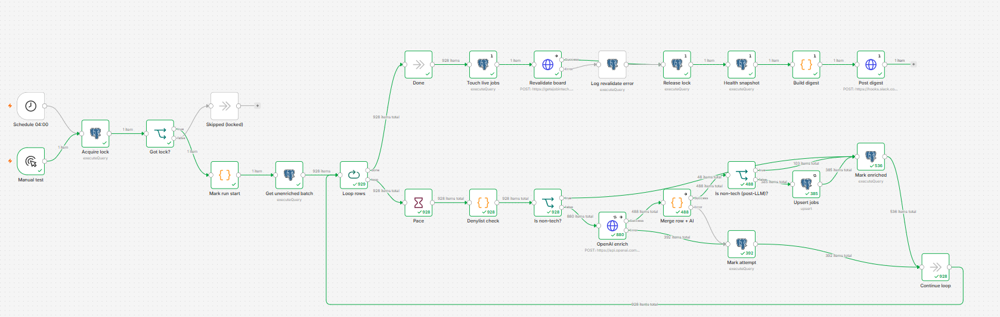

The nightly data pipeline behind getajobintech.co.za, a South African tech job board. It collects listings from several job boards every night, cleans and tags them with AI, and publishes one deduplicated feed the website can trust.
Extract
Transform · AI
Store
Resilience
Orchestration
Written for fellow engineers, scraping nerds and hiring managers — not as a setup guide. It explains the problem, the shape of the system, the decisions I made, and the trade-offs I weighed. Click any coloured chip or legend item to spotlight that stage across the page; hover the dotted terms for plain-language definitions.
Scope note. This document deliberately abstracts the specific sources, vendors, and endpoints. It is a design write-up, not a runbook — the goal is to show the thinking.

The product. getajobintech.co.za, the live board the pipeline feeds every night.
The one idea
Read a site the way the site reads itself
I have been really inspired by what the team at Parse.bot has been doing. But I did not want to pay for yet another subscription, so I tried to reverse-engineer their approach to unlocking the data on the internet.
The most robust way to read a site is the way the site reads itself. So for every source I look for structured data before reaching for a scraper. Only genuinely messy HTML gets the AI-extraction treatment, validated against a fixed schema.
A structured feed survives a visual redesign. A brittle parser does not.
The single most important design choice in the pipeline
The problem it removes
Scraping that quietly rots
Job boards change their markup, block datacentre traffic, and rate-limit aggressively. My first version was a single Python job on a scheduler. Let's just say the source websites did not like this approach at all 💅 Three failure modes drove the rebuild.
Failure 1
Datacentre traffic gets blocked
Running from shared cloud IPs with a stale TLS fingerprint triggered bot walls and bans.
Failure 2
Brittle parsing breaks on layout change
Guessing fields by line position meant any redesign silently corrupted the data.
Failure 3
All-or-nothing runs lose everything
One big batch with a late failure threw away a whole night's work.
Old approach
What it cost
New approach
Datacentre IPs, fixed fingerprint
Blocks and bans
Residential-proxy anti-bot layer, used only when needed
Position-based HTML parsing
Corrupt data on redesign
Structured data first, AI extraction for the messy rest
One monolithic batch
Total loss on any failure
Per-source isolation, save-as-you-go
The whole system
A nightly ETL flow: extract many, transform with AI, load one clean feed
The pipeline is a nightly ETL flow. Each stage is decoupled so a problem in one never cascades into the next. Several job boards feed per-source workers, which land raw rows in a staging store. A separate AI step cleans and tags them, then publishes to the live feed the website reads.
Extract — several SA tech boards feed per-source workers
Sources
APIs · embedded data · private JSON · anti-bot
→
Workers
one per source
Staging
raw rows · save-as-you-go
Enrichment
AI clean + tag · own schedule
Live feed
clean jobs the website reads
↻ A problem in any stage is isolated — it never cascades into the next
Orchestration — n8n + managed Postgres
The flow runs on n8n, a workflow engine, with a managed Postgres database as the store. Everything else — the proxy layer, the AI provider, the extraction service — is swappable behind a clear boundary.
Who does what:
Workers acquire, normalise, validate
Enrichment cleans and tags
Store holds staging + the live feed
Design principle · acquisition
Prefer a site's own structured data; use AI only for the mess
For every source I work down the tiers and stop at the first one it supports. The higher the tier, the more intense it is to build and the more expensive it is to maintain. This ordering minimises the surface that can break.
1
Tier 1 · most robustExtract
Official or partner API available? Use the API. The cleanest, most stable contract a source can offer.
2
Tier 1 · deterministic, no AIExtract
Data embedded in the initial page HTML? Parse the embedded structured data directly — survives a visual redesign.
3
Tier 2Extract
Private JSON backend the site's own app calls? Call that private JSON source the front-end already uses.
4
Tier 3 / 4 · last resortTransformResilience
Strong anti-bot, or no clean source? AI extraction validated against the schema, or a library-based service behind the residential-proxy layer.
Design principle · structure
Three decisions that keep adding a source cheap
Separate how you fetch from how you read
Transport (getting the bytes) and extraction (reading the fields) are independent choices. A source can fetch over plain HTTP today and switch to the proxy layer tomorrow without touching the parser. Anti-blocking becomes a config flip, not a rewrite.
Normalise everything to one schema
Every source, however it is acquired, produces rows in one unified schema of about 30 fields — title, company, location, salary, remote policy, and so on. A canonical job URL is the required deduplication key, so re-scraping a listing updates it rather than duplicating it. The enrichment step and the website never need to know where a row came from.
One reusable contract per source
Adding a board is deliberately cheap: one config row plus one small worker that follows a shared five-step contract. New sources inherit all the resilience guarantees for free.
The contract every source worker follows
Acquire
API, embedded data, or service
→
Paginate & pace
randomised delays
→
Normalise
to the one schema
→
Validate
has a title and a URL?
→
Upsert
this page to staging
↻ Loop to the next page. Invalid rows are set aside for review, never dropped
Resilience
Finished work must always be durable, and no source can break another
Several patterns enforce the guiding rule. Together they turn a fragile nightly job into something that degrades gracefully instead of losing a night's work.
Per-source isolationResilience
The orchestrator runs each source in its own worker and continues past any failure, so one crash is logged and skipped.
Save-as-you-goResilience
Every page is written to staging before the next page is fetched, so a mid-run crash keeps everything collected so far.
Resumable runsResilience
Lightweight checkpoints record how far each source got, so an interrupted run picks up where it stopped.
Decoupled enrichmentTransform
The AI step reads from the database on its own schedule, so a scraping failure never blocks enrichment and vice versa.
Retry with a capResilience
A failed AI call increments an attempt counter without marking the row done, so it retries next run and gives up after three tries instead of looping forever.
A single-run lockResilience
The enrichment schedule takes a lock with a stale timeout, so overlapping ticks can't double-process or corrupt state.
How isolation and decoupling protect the work
Nightly schedule
reads enabled sources
→
Fan out
independent workers · continue on fail
→
Staging
upsert per page
→
Enrichment
own clock + lock · retry, cap at 3
→
Health snapshot
one-line digest alert
Polite by default. Scraping responsibly is both an ethics choice and a survival strategy. Each source runs with randomised delays, single-domain concurrency, and long pauses between batches. On repeated rate-limit responses a source circuit-breaks for the night rather than hammering into a ban.
A silently broken source used to look identical to a quiet night. Now every enrichment run writes one health record — rows processed, backlog size, sources succeeded versus failed — and posts a one-line digest to a chat channel. A green run and a degraded run are now visibly different.
An observability snapshot, not just logs
Trade-offs
Decided against — the roads not taken
The trade-offs I am most deliberate about are the things I chose not to build. The pattern: I optimise for coverage per unit of fragility, not raw source count.
Rejected
A low-coverage board
HTML-only with no structured data, returning roughly 0.3% of another board's coverage for the same query at meaningful monthly proxy cost. Not worth the maintenance.
Deferred
A high-profile professional network
High Terms-of-Service and block risk meant the downside outweighed the marginal listings. Deferred, not built.
Dropped
Framework-specific search terms
Pulled noise with no matching place to file the results, so they came out of the query set.
AI enrichment
Collapsing chaos into a canonical role
Raw job titles are chaos — "Senior Angular Full Stack DOTNET Developer", "1st-line Support Tech", "Cyber Security Specialist". The website needs clean buckets to build landing pages and trend charts. So enrichment collapses every title onto a small fixed set of canonical roles — around two dozen — with a deliberately small Other bucket for genuine non-tech roles. The collapse runs in three layers, each a safety net for the one before.
Three layers — each a safety net for the last
Layer 1
LLM picks the closest canonical role
→
Layer 2
deterministic keyword rules · most-specific-first
→
Layer 3
backfill repairs legacy rows · no AI cost
→
Output
one canonical role, or a small 'Other'
Why three? The LLM is good at semantics but not reliable enough to trust alone. The deterministic rules are the source of truth for new rows and catch the LLM's mistakes — testing the most specific patterns first so a full-stack role never gets filed as frontend. The backfill repairs historical rows for free, with no additional LLM calls.
The hard-won lesson: a free-text role field let "Other" become the single largest category on the board, which polluted the trend pages. Forcing every title through a fixed taxonomy fixed that at the root.
Proof it runs
The enrichment workflow in production
The diagram above is the concept. Here is what it looks like when it runs — the real system, every night.

The enrichment workflow in n8n. The boxes are n8n nodes; the paths show data flow and decision branches — the fork where non-tech roles skip the AI call, the retry path when the LLM fails, the loop that processes a batch before releasing the lock. The abstract three-layer model above is the concept; this is the proof it actually works.
Beyond roles
The rest of the enrichment surface
Role normalisation is the headline, but the enrichment step handles several other cleanup jobs that share the same philosophy — deterministic rules where possible, AI only where the text is genuinely ambiguous.
A non-tech gateTransform
After the AI call, filters out listings that slipped past the source queries — "Girl Friday / Admin", "Bridge Engineer", "Tax Specialist". The AI flags each row as tech or non-tech; a second deterministic check catches cases it missed (role is Other and no recognisable tech skill). Rejected rows stay in staging and never reach the live feed.
Job-level canonicalisationTransform
Collapses the zoo of seniority labels — "Mid-Level", "Intermediate", "Other", the literal string "null" — onto four buckets: junior, mid, senior, lead. Kept byte-for-byte identical to a database trigger on the board side, so neither system can drift.
Skill casingTransform
Deduplicates and canonicalises the top ~120 skill strings ("reactjs" → "React", "node.js" → "Node.js", "ms sql" → "SQL Server") so the board's skill facets don't show one technology under three spellings.
City normalisationTransform
Rewrites remote-job location noise — province codes, country names, "South Africa" — into a single "Remote" token so the location filter works cleanly.
A taxonomy review labelTransform
The other_role field captures the AI's free-text role suggestion whenever the deterministic rules land on Other, giving me a review queue to spot emerging roles that deserve their own bucket.
Current scope
What feeds the pipeline today, by tier
Several boards across the tiers feed the pipeline today. Honest current state below — live sources, what is deferred, and what is next.
Tier
Source shape
How it's acquired
Status
Tier 1
Official / partner API
Extract direct API
Live
Tier 1
Data embedded in the page
Extract parse embedded data
Live
Tier 2
Private JSON backend
Extract call the site's own JSON
Live
Tier 3 / 4
Behind strong anti-bot
Resilience proxy + library service
Live
—
High-profile professional network
Deferred pending a safer path
Deferred
Next
Richer salary + deep history
Transform salary normalisation, backfill mode
Planned
Keeping the docs honest
A doc-guard that makes documentation part of the work
Keeping daily testing, learning, and docs up to date is extremely important with the fragility of scrapers. So I built a forcing function into the development workflow itself. An automated guard runs every time a coding session ends. It diffs what changed: if any pipeline code was touched but no documentation was updated, the session is blocked from closing until the docs catch up. You can't ship the change and promise yourself you'll document it later.
Pipeline code changes
workflows · schema · config · database
→
Doc guard
runs on session end — a gate, not a checklist
→
Docs in sync?
no → blocked until updated
→
Session closes
cleanly
This matters beyond keeping the README current. It encodes a value: documentation is part of the work, not a trailing task. The guard makes that impossible to defer.
Go deeper
The board, and the write-up
getajobintech.co.za
The live South African tech job board this pipeline feeds every night — one deduplicated, AI-cleaned feed across several sources.
A design write-up, not a runbook — the sources, vendors, and endpoints are deliberately abstracted. The throughline: prefer a site's own structured data, isolate every source, make finished work durable, and let AI clean only the genuinely messy rest.
Owner: Jess Klette · Last reviewed: 2026-06-29 · Review cadence: when the architecture changes materially. This is a public case study; the internal build docs live separately.